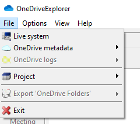
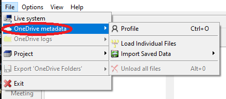
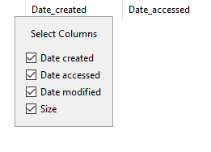
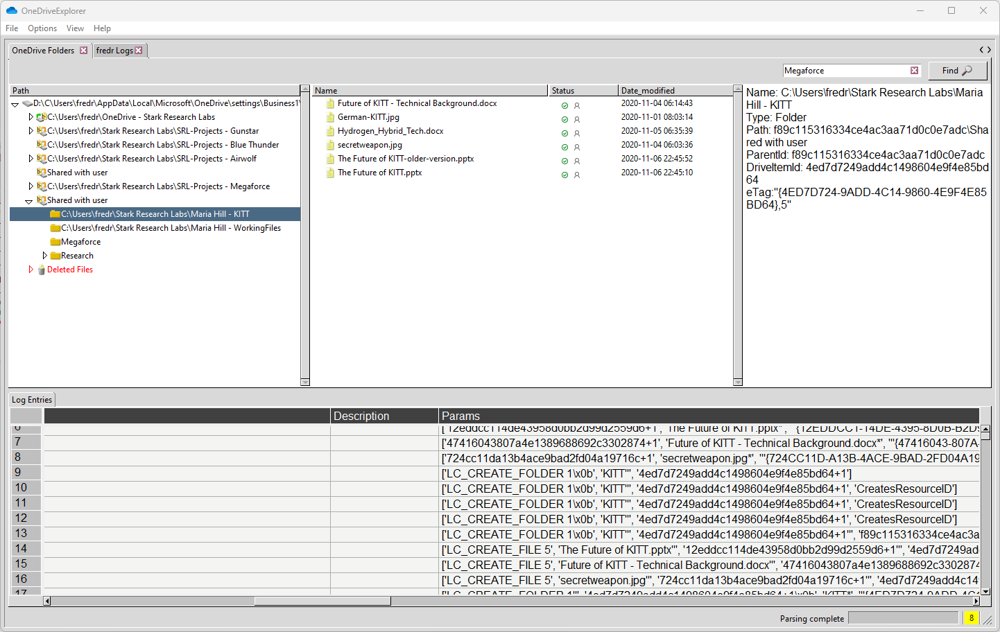

OneDriveExplorer.py -f business1\d1a7c039-6175-4ddb-bcdb-a8de45cf1678.dat

Revision history
2022-11-08 Rev. 1 - Initial Release
2022-12-07 Rev. 2 - Updated for v2022.12.08
2023-03-10 Rev. 3 - Updated for v2023.03.10
2023-05-05 Rev. 4 - Updated for v2023.05.05
2023-09-07 Rev. 5 - Updated for v2023.09.07
2023-12-13 Rev. 6 - Updated for v2023.12.13
2024-10-31 Rev. 7 - Updated for v2024.11.01
OneDriveExplorer GUI is used to view the contents of <UserCid>.dat files. It can load multiple settings, logs, and $Recycle.bin files at once. Search across all settings files, view OneDrive logs and much more.
After starting OneDriveExplorer, the main interface is displayed.
Settings for themes, fonts, logs, output to csv, json, html are saved and reloaded between program executions. You can reset these options by deleting the ode.settings file.
There are five sections to the main interface.
On the left-hand side of the window is the navigation pane. This pane displays the <UserCid>.dat and SQLite files that have been loaded and the folder structure of OneDrive. Once a <UserCid>.dat and/or SQLite file has been loaded and a folder has been selected, a context menu is available by right clicking on the folder. Context menu options will be discussed later.
The file/folder pane shows the contents of the folder selected in the navigation pane along with it's OneDrive status. Once a file/folder has been loaded and a folder has been selected, a context menu is available by right clicking on the file/folder. Context menu options will be discussed later.
File folder statu is a s follows:
*Note: Not Synced and Not Linked do not exist on the endpoint. These are artifacts of syncing and linking libraries.
The Details pane shows detailed information about the folder/file selected. Information includes name, type, path, parentid, driveitemid, etag, and number of children.
The Log Entries pane shows related logs to the folder/file selected. This will only be populated if the OneDrive logs are parsed along with the <UserCid>.dat/SQLite file. This will be discussed in more detail.
Across the bottom of the interface is a status bar as seen below.

The status bar contains a progress bar for the current running job and the total number of messages available on the Message form.
Double clicking on the Total messages counter will show the Messages form. I there are any errors in the Messages form, the background will be yellow. If there are any errors, the background will be red. When the Messages form is viewed, the background will change back to the default color.
The main menu contains options for loading <UserCid>.dat files, preferences, themes, etc. Many of the menu items have shortcut keys. Pressing the keys shown by a menu item will activate the menu item.
The next sections below will detail the submenus.
The File menu contains options for loading OneDrive settings files and exporting.

Exporting to PDF would generate a PDF file that contains the following:
This can be useful for adding to reports or other documentation.
The Options menu contains items for the look and feel and preferences of OneDriveExplorer.

The Preferences dialog allows you to change various OneDriveExplorer settings as seen below.

The View menu contains two options: Messages and CStructs.
Messages toggles the visibility of the Messages window. The messages window displays status messages on the parsing process. The total number of messages is also shown on the main window's bottom status bar to the far right. Double clicking the message count will also show the Messages window.

As mentioned above, the background of the messages count will be yellow if a warning message exists and red if an error message exists. The background will return to default when the Messages window is shown.
The Messages window contains two options. One for clearing the messages and the other to export the messages. Exporting the messages can be useful for troubleshooting the application.
The CStructs option displays a list of available cstructs for a given code file. Details include author, functions, and description. CStructs will be discussed in more detail in a dedicated section of this manual.
The help menu contains two options: Quick help and About.
Loading data in OneDriveExplorer can happen in multiple ways. This includes Live system, <UserCid>.dat files, ODL logs, output from command line runs, projects, etc. The following sections will walk through loading data in OneDriveExplorer.
*Note: OneDriveExplorer must be run as an administrator of this option to be enabled.
Live system scans the current system looking for <UserCid>.dat/SQLite, NTUSER.dat, $Recycle.Bin, and OneDrive logs (if log parsing is enabled). Information will be parsed and loaded into OneDriveExplorer.
OneDrive settings contains four options for loading <UserCid>.dat/SQLite data: Load <UserCid>.dat, Load from SQLite, Import JSON, and Import CSV.

Use this option to load a <UserCid>.dat file. Default location is %USERPROFILE%\%AppData%\Local\Microsoft\OneDrive\settings\<Personal\Business>. Once a file is selected, OneDriveExplorer will prompt to load a User Hive and the $Recycle.Bin folder.

You can bypass these dialogs in one of two ways:

Use this option to load OneDrive SQLite databases. Default location is %USERPROFILE%\%AppData%\Local\Microsoft\OneDrive\settings. Once a folder is selected, OneDriveExplorer will prompt to load a User Hive.
You can bypass this dialog in one of two ways:
Import JSON allows for loading a previously saved JSON file from the command line or GUI application.
Import CSV allows for loading a previously saved CSV file from the command line or GUI application.
*Note: This option is only available if enabled in the Preferences dialog.
OneDrive logs contains two options for loading ODL data: Load ODL logs and Import csv. OneDrive logs will be discussed later.

Use this option to load OneDrive log files. The default location is %USERPROFILE%\%AppData%\Local\Microsoft\OneDrive\logs\<Personal\Business>. If the ObfuscationStringMap.txt or general.keystor file is found, it will be used to automatically deobfuscate the logs.
Import CSV allows for loading a previously saved CSV file from the command line or GUI application.
Projects allow you to load one or more <UserCid>.dat and log files; save the currently loaded <UserCid>.dat and log files. This allows for quickly loading the same <UserCid>.dat and log files for a particular case versus loading the files individually. Projects are saved with a .ode_proj extension.
Columns can be added or removed by right clicking the column header in the file/folder pane. Columns that can be selected include Date Created, Date Accessed, Date Modified, and Size. The version of ONeDrive determines if this data will be available.

Selecting Folders/Files in OneDriveExplorer works much the same as it does in Windows Explorer. Clicking the small arrow to the left of the folder or double clicking the folder will expand that folder.
The top of the OneDrive Folders tab contains a simple entry box to enter text to find. If the text is found, the Folders/Files will be populated in the middle pane.

The context menu changes dynamically depending on what you right click on. Most common functions are copy Name, Path, Details, or Log Entries. Folder entries allow for expanding and collapsing the tree structure. Top level entries have the option to unload the entire OneDrive folder structure.
When a Folder/File is selected, the Details pane is populated with various data about the selection. There can be up to four tabs with different information about the file/folder.
These include:
OneDrive logs are stored as binary files with extensions .odl, .odlgz, .odlsent and .aold usually found in the following location: %USERPROFILE%\%AppData%\Local\Microsoft\OneDrive\logs\<Personal\Business>. When loaded, new tabs will be populated with the logs for each user next to the OneDrive Folders tab.
Selecting one of these tabs will bring up the logs for that user. From the log tab, you can sort columns and pop out individual cells.
From the OneDrive Folders tab, selecting a file/folder will populate the Log Entries tab with some, not all, of the logs associated with the file/folder. This can be useful to see what activities have taken place on the file/folder.

cstruct files provide a means to better parse ODL entries. The parameters of ODL entries consist of structured binary data and are parsed with a regex looking for ascii characters. cstruct files give us a means to define the structured data and extract it accordingly.
CStructs live under the main OneDriveExplorer directory in a subdirectory called 'cstructs'. If you would like to load cstruct files from a different directory, use the --cstructs switch when starting OneDriveExplorer
OneDriveExplorer.exe --cstructs <folder_path>
When OneDriveExplorer is started, it looks for all files matching that pattern in the cstructs folder. It then verifies that each file found is a valid cstruct file. IF it is, the cstruct is made available to OneDriveExplorer.
To view all available cstructs, use the View | CStructs menu option. When this is selected the following dialog is displayed:

To get additional details about the cstruct, click the Add'l Info button. The following dialog will be displayed:
OneDriveExplorer is a tool used to parse <UserCid>.dat files and reconstruct the folder structure of OneDrive. <UserCid>.dat files are commonly found at %USERPROFILE%\%AppData%\Local\Microsoft\OneDrive\settings\<Personal\Business>
Running OneDriveExplorer.exe without any arguments displays a list of command line options:
usage: OneDriveExplorer.exe [-h] [-f FILE] [-s SQL] [-d DIR] [-l [LOGS]] [-r REGHIVE] [-rb RECYCLE_BIN] [--csv CSV]
[--csvf CSVF] [--html HTML] [--json JSON] [--pretty] [--clist] [--cstructs CSTRUCTS]
[--sync] [--debug] [--guids]
options:
-h, --help show this help message and exit
-f FILE, --file FILE <UserCid>.dat file to be parsed
-s SQL, --sql SQL OneDrive folder containing SQLite databases
-d DIR, --dir DIR Directory to recursively process, looking for <UserCid>.dat, NTUSER hive, $Recycle.Bin, and
ODL logs. This mode is primarily used with KAPE.
-l [LOGS], --logs [LOGS]
Directory to recursively process for ODL logs.
-r REGHIVE, --REG_HIVE REGHIVE
If a registry hive is provided then the mount points of the SyncEngines will be resolved.
-rb RECYCLE_BIN, --RECYCLE_BIN RECYCLE_BIN
$Recycle.Bin
--csv CSV Directory to save CSV formatted results to. Be sure to include the full path in double quotes.
--csvf CSVF File name to save CSV formatted results to. When present, overrides default name.
--html HTML Directory to save html formatted results to. Be sure to include the full path in double
quotes.
--json JSON Directory to save json representation to. Use --pretty for a more human readable layout.
--pretty When exporting to json, use a more human readable layout. Default is FALSE
--clist List available cstructs. Defaults to 'cstructs' folder where program was executed. Use
--cstructs for different cstruct folder.
--cstructs CSTRUCTS The path where ODL cstructs are located. Defaults to 'cstructs' folder where program was
executed.
--sync If true, OneDriveExplorer will download the latest Cstrucs from
https://github.com/Beercow/ODEFiles prior to running. Default is FALSE
--debug Show debug information during processing.
--guids OneDriveExplorer will generate 10 GUIDs and exit. Useful when creating new Cstructs. Default
is FALSE
There are several groups of command line options for OneDriveExplorer.
-f: Full path, including <UserCid>.dat, of <UserCid>.dat file to be parse
-s: Directory containing OneDrive SQLite databases
-d: Directory to recursively process, looking for
-r: This switch will instruct OneDriveExplorer to use the registry hive supplied to resolve OneDrive mount points.
-rb: This switch will instruct OneDriveExplorer to use the $Recycle.Bin supplied to look for deleted files. This switch can only be used when a registry hive is supplied.
-l: Directory to recursively process for ODL logs.
--csv: Directory to save CSV formatted results to. Be sure to include the full path in double quotes.
--csvf: File name to save CSV formatted results to. When present, overrides default name
--html: Directory to save html formatted results to. Be sure to include the full path in double quotes.
--json: Directory to save json representation to. Use --pretty for a more human readable layout.
--pretty: When exporting to json, use a more human readable layout. Default is FALSE
--clist: List available cstructs. Also used to check for errors in cstruct files.
--cstructs: The path where ODL cstructs are located. Defaults to 'cstructs' folder where program was executed.
--sync: Downloads the latest Cstructs from https://github.com/Beercow/ODEFiles
--debug: Show debug information during processing.
--guids: Generates 10 random GUIDs for use with cstruct files.
To use OneDriveExplorer, simply provide the .\<UserCid>.dat file to the -f argument
OneDriveExplorer.py -f business1\d1a7c039-6175-4ddb-bcdb-a8de45cf1678.dat
Depending on the options, OneDriveExplorer can produce JSON, CSV, or HTML files of the parsed data. The --pretty option can be used to output the JSON into a more human readable layout.
A user registry hive can be supplied with the -r argument. This will resolve some of the mount points associated with OneDrive. Along with the registry hive, $Recycle.Bin can be added with the -rb option to look for deleted files.
general.keystore file